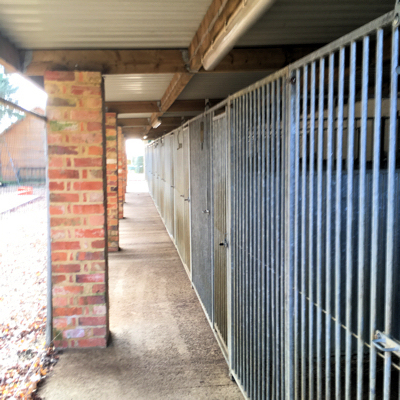
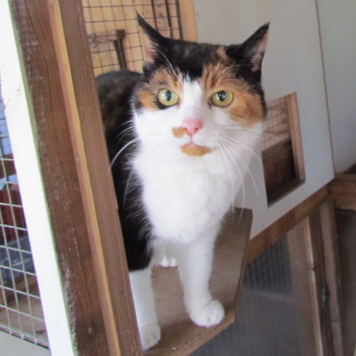
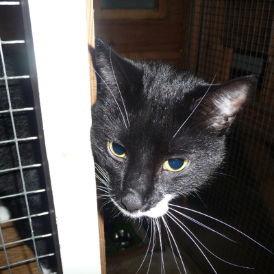
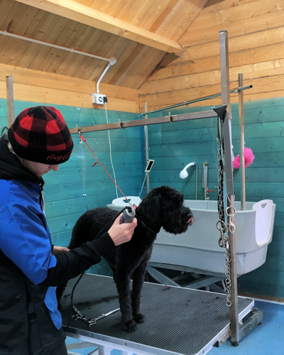
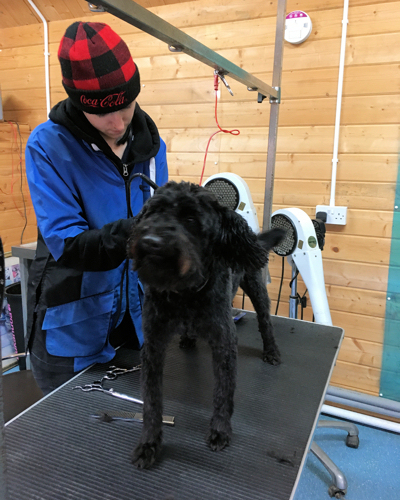
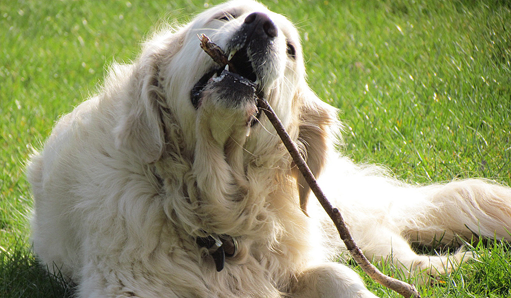
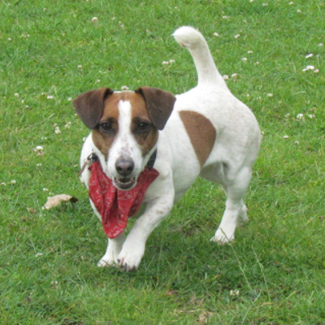
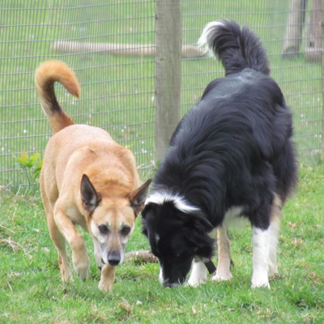

Kennels, cattery, grooming & daycare
Everything happens on one site at Brankley Farm — so your dog or cat's routine, walks and grooming are all handled by the same familiar team.
Kennels
Brankley Farm has proven to be the ideal location for our more lively guests. An acre-and-a-half secure paddock with a wooded area to run and play in means the time dogs spend with us is a happy one.
At 8am, dogs are woken with a friendly pat and a biscuit, then taken out for their morning walk. Breakfast and any medication follow, before dogs are returned to their cleaned rooms for a fuss, a cuddle and an afternoon rest. Between 3 and 4pm they're fed and taken out for a second walk. In summer, runs stay open until 10pm; in winter we settle dogs earlier, put on heat lamps and give evening treats before bed.
- On arrival, keep dogs on leads and report to the office
- A valid vaccination certificate with proof of yearly boosters and kennel cough is required
- Viewings are available by appointment only
- Pick-up and drop-off service available if you're busy — just call ahead
Prices vary by kennel and length of stay — call 01604 743900 for current rates.






Cattery
The cattery looks out over the farm and its animals — great daytime viewing for cats, if a little exhausting to watch. Cats are woken up to a friendly cuddle and breakfast each morning, pens are cleaned and any medication given, and cats are checked and fed again in the afternoon before settling in for a cosy night's sleep. When it's cold, every pen is individually heated.
- On arrival, please report to the office
- A valid vaccination certificate with proof of yearly boosters is required
- Viewings are available by appointment only
- Pick-up and drop-off service available if you're busy — just call ahead
Should your cat need a special diet, please bring their own food. Call 01604 743900 for current rates.
Dog grooming
Full grooming services are available in our own Grooming Parlour, for resident guests and non-resident dogs alike.
- Bath, nails and ear cleaning
- Styled to breed standard and customer preference
- Hand stripping
- Bath, brush and nail clipping
- Nail clipping on its own
Prices depend on breed, coat and service — call 01604 743900 for current rates.






Doggie daycare
Is your dog sitting at home bored while you're out at work? Our daycare dogs get their own individual kennel with bedding and heating, two walks a day, and feeding. If you'd rather feed your dog at home, we'll give them treats around feeding time so they don't feel left out.
- Individual heated kennel for the day
- Two walks plus feeding included
- Pick-up and drop-off service available if you're busy — just call ahead
Licensed by the local authority. Call 01604 743900 for current rates.
Common questions
Do I need to book a viewing before boarding?
Yes — viewings of both the kennels and cattery are available, but by appointment only. Call 01604 743900 to arrange a time.
What vaccinations does my pet need?
All dogs need a valid vaccination certificate showing yearly boosters plus kennel cough cover. Cats need a valid vaccination certificate showing yearly boosters. Please bring the certificate with you on arrival.
Can you collect and drop off my pet?
Yes — a pick-up and drop-off service is available across kennels, cattery, grooming and daycare if you're too busy to bring your pet in yourself. Call ahead to arrange it.
My pet is on a special diet — what should I do?
Standard pricing includes our own food, but if your pet needs a special diet, please bring their own food with them when they arrive.